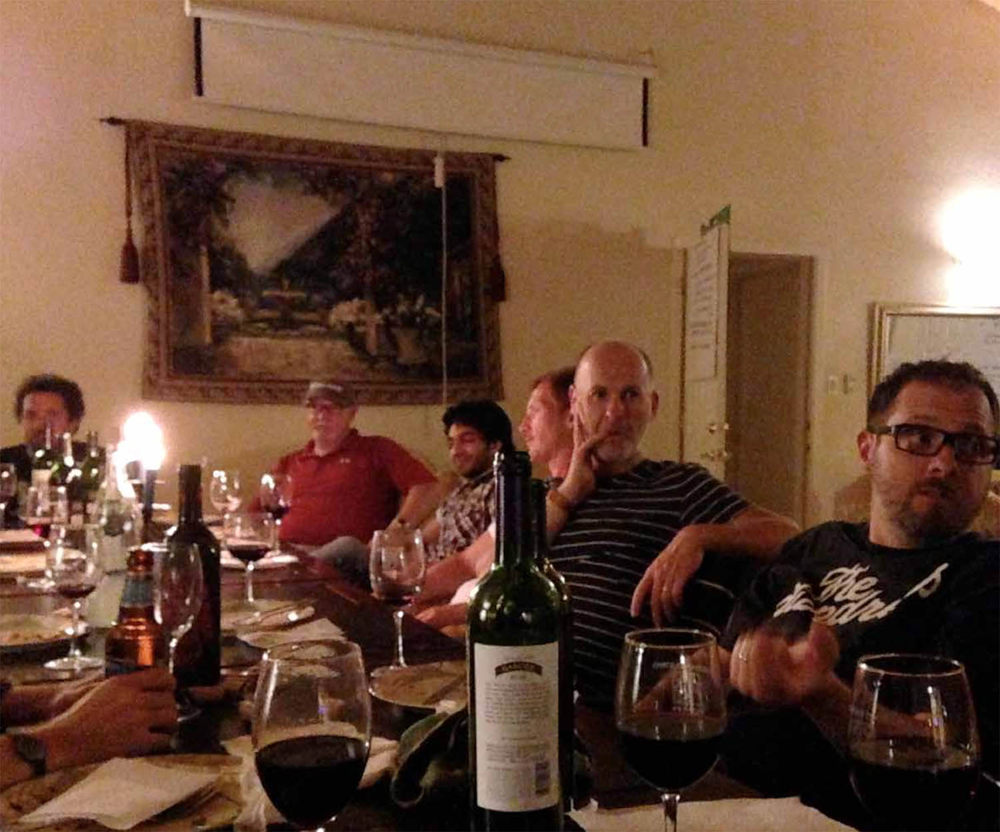
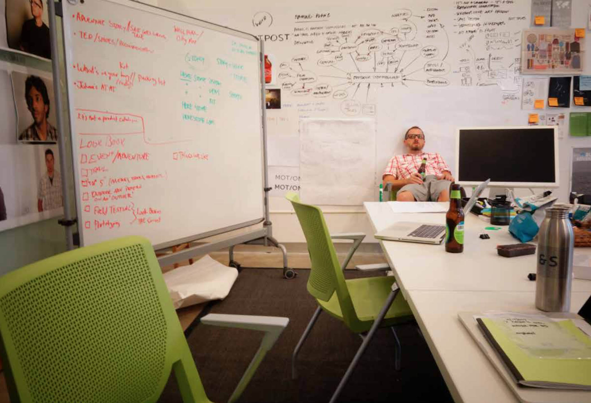

ADVENTURE LAB
Our team believes that the more time you spend outdoors, the happier and healthier you will be. Our entire team enjoys a range of active sports – skiing, surfing, cycling, climbing, etc. – and are passionate about helping others get out and enjoy nature.
Joining the team
My first introduction to the team and the upcoming product line was at an offsite location in the hills of central California. The two-day jamboree began with a set of rules for the studio:
- Be optimistic and laugh more
- Eat and cook together
- Good studios build good walls
- Say good morning and good night
- Read fiction
- Design the designing
- Embrace the fringe
- Watch your mouth
- Meet out in the open
- Everyone leads at some point
- Invert everything
- Hire a bookie
- Blur boundaries, occasionally
- No Dickheads
This set of 14 rules would define the days to come. Through long hours, table tennis tournaments, group surfing trips, and too many JIRA tickets, these rules helped the team hold fast and became the glue that ultimately assisted us in create something amazing.

- 
The Journey Ahead
By the time I joined the team, a lot had already been figured out. We were creating a way for people to tell and share compelling outdoor stories. We would do this through the creation of an adventure camera, a rugged sensor, a companion iOS app, a web platform, a custom map layer, and a cloud backend. There were three studios with less than 100 people combined involved in the making of everything, and we had a long ways to go.
Upon joining there were prototypes of the camera for the team to experiment with and occasionally we would see flashes of the sensor. However, the web platform and the iOS app hadn’t been fully fleshed out. We had this list of guidelines to begin framing the web and app:
- People could share their stories from device or the iOS app
- The stories would also be shared to various social platforms
- Our team built a beautiful outdoor map for all the touch points
- There was a lot of data captured by the camera and sensor
- The iOS app was being designed by Rally Interactive
- All the products needed to have a similar look and feel
Concepting
I worked closely with one other designer to implement the set of rules above into the web platform, the least realized of all product areas. We flew to Salt Lake City, UT where we teamed up with Ben Cline of Rally Interactive and his amazingly talented design team. Our goal was to take the set of rules and flesh out possibilities for the web and app components, while still creating something meaningful and engaging. We began by laying out the main iPad key screen first. If we nailed the layout before leaving Salt Lake City, then Rally could crank out the iPhone designs and we could crank out the web designs. We worked out a communication plan so that our designs were always consistent.

- 
Production
Upon returning from Rally, we realized that we had our work cut out for us. At this point, we had one major key screen designed for one screen size and a strategy for comping the rest of the screens across the platform.
While we were away, our engineering team had been hard at work switching the base framework from PHP to AngularJS. In the process of switching over, they asked our team if we had any suggestions for front-end frameworks. I suggested Zurb Foundation and SASS/SCSS as I had experience working with them on various other projects and had always been satisfied with the flexibility of the system and how simple it makes responsive design. I also suggested that we submit our specs using a hybrid approach, where our team could both design and build the pages in HTML, SCSS, and jQuery then hand them off for the engineers to implement into Angular. This approach had worked well for me in the past as it allowed for pixel perfect specs in the browser. In addition, the engineers don’t end up with as many visual QA tickets in JIRA.
The engineers were sold on both using Foundation/SCSS and having us deliver our designs as full-on web pages; we were off to the races. With all the touch points in different areas, we needed to make sure that any changes we made would reflect across the platform. This complexity meant that we weren’t able to put our headphones on and just work away, but had to be in constant communication with our peers on the team and keeping abreast with our colleagues across the project. Mix this with a cocktail of engineering meetings, JIRA tickets, product discussions, and planning the marketing and support sections of the site and you’ve got a hectic, yet wonderful environment.
Less than one hundred people, an adventure camera, a rugged sensor, a companion iOS app, a web platform, a custom map layer, and a cloud backend. Be optimistic. Laugh more. Embrace the fringe. Invert everything. Don’t be a dickhead.
What we built

The Camera
- 4k video at 30fps and 1k video at 180fps
- Tracks location, speed, and elevation
- Comes with our outdoor map embedded
- Android based
- Wi-Fi, LTE, and GPS enabled
- Fully waterproof
- Ability to share to social destinations
The Sensor
- Tracks location, speed, and elevation
- Fully waterproof
- Pairs with companion app
- GPS enabled
- Tracks gear that it is attached to
- Reverse Geolocation on the fly
- Custom E-ink screen for maximum visibility
The App
- Pairs with Camera and Sensor
- Add and remove gear
- Custom HERE map embedded
- Live Data Stream
- Share to social media destinations
- See cover frames from all captures with camera
- Displays summary of all data for the owner

The Web Platform
- Public space for guests to view content
- Add and remove camera sensor
- Custom HERE map embedded
- Share to social media destinations
- Displays summary of all data for the sharer
While impressive, we know that technical specs ultimately don’t sell the product. More importantly, technical details don’t help people connect with the platform on an experiential level. That awesome surf session they had; the crazy jump their friend took on his mountain bike; the view looking out while climbing El Capitan – these are the moments that are special and mean something to an adventurer. We created a way to share those moments.
Every time we put these cameras in a real adventurer’s hands, the response was similar: “Whoa, this is really, really cool. When can I get one?” I had one of those moments myself recently. I was surfing with a couple of friends and brought the camera out with me. I filmed the video below and immediately uploaded it to the web platform – all while sitting in the lineup on my surfboard. It felt amazing and I’m excited to share this product with the world.
Every time we put these cameras in a real adventurer’s hands, the response was similar: “Whoa, this is really, really cool. When can I get one?” I had one of those moments myself recently. I was surfing with a couple of friends and brought the camera out with me. I filmed the video below and immediately uploaded it to the web platform – all while sitting in the lineup on my surfboard. That moment felt absolutely amazing, and made the whole journey worth it.
Abridged Credits
Rhys Newman (Design Studio Lead)
Charlie Sutton (Creative Director)
Duncan Burns (Creative Director)
Nick Foster (Creative Director)
Olly Farshi (Design Lead)
Brody Larson (Design Lead)
Ben Cline (Design Lead)
Earl Carlson (Interactive Designer)
Mark Fulks (Engineering Studio Lead)
Serge Eby (Engineering Lead)